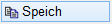
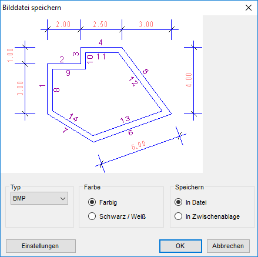
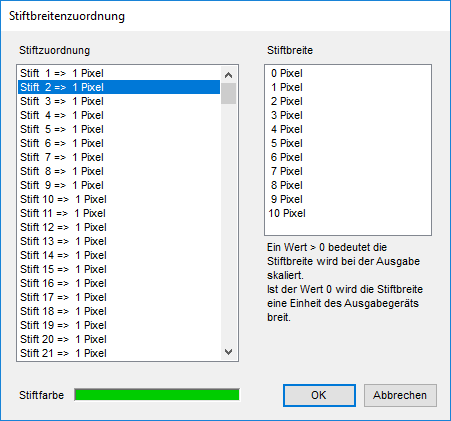

Eine beliebige ISBCAD Vektorgrafik (Teilzeichnung) als Pixel- bzw. Rastergrafik in die WINDOWS®-Zwischenablage kopieren oder als Datei speichern. Mit dem Dateiformat EMF ist es möglich, Teilzeichnungen aus ISBCAD als Vektorgrafik auszugeben.
Für die Grafik werden ausschließlich die eingerahmten sichtbaren Pixel eingesammelt. Da es sich um eine Pixelgrafik handelt, entsteht bei der nachträglichen Skalierung immer ein Qualitätsverlust.
§Klicken Sie den Punkt an, von dem aus der Auswahl-Rahmen um die entsprechenden Elemente aufgezogen werden soll, bewegen Sie den Cursor und klicken Sie erneut, um die Auswahl abzuschließen. [1.Punkt]; [2.Punkt].
Der Dialog Bilddatei speichern wird geöffnet.
§Wählen Sie im Dialog die gewünschten Einstellungen und bestätigen Sie mit OK.
Der gewählte Zeichnungsteil wird in die WINDOWS®-Zwischenablage übernommen bzw. als Datei gespeichert.
Optionen im Dialog "Bilddatei speichern"
 |
Typ
Auswahl eines Dateiformates:
BMP, EMF, PNG, JPG, TIF, Bautext.
Welches der Formate Sie verwenden, hängt davon ab, ob eine hohe Farbtiefe gewünscht wird oder nicht. Oder ob die Dateigröße möglichst klein sein soll.
Bautext (VCmaster©):
Die Zeichnung wird direkt in Schwarz/Weiß umgewandelt, und in der Zwischenablage gespeichert. Im Bautext kann der Inhalt aus der Zwischenablage in das Dokument eingeladen werden. Beachten Sie, dass Füllungen als schwarze Flächen abgebildet werden.
Farbe
Farbig
Die eingestellten Bildschirmfarben werden für alle Stifte übernommen.
Schwarz/Weiß:
Alle Stifte werden in Schwarz umgewandelt. Auch die Füllungen werden dadurch schwarz. Sie können eventuell vorher die Füllungen in eine extra Folie transformieren [Konst1 | FenÄnd | Attrib; Filter: Füllungen] und diese ausblenden [Konst1 | Folien | an/aus].
Speichern
In Datei
Geben Sie im Dialog Speichername für Bilddatei Name und Pfad an. Die Option In Datei ist dann sinnvoll, wenn das Bild nicht verändert wird und mehrfach benutzt werden soll.
In Zwischenablage
Speichert den Zeichnungsausschnitt in der Windows®-Zwischenablage. Das Bild kann über Einfügen in ein Dokument, z. B. in MS Word, eingelesen werden.

Angaben für die Stiftbreitenzuordnung in der Bilddatei. Öffnet den Dialog Stiftbreitenzuordnung.
OK
Der gewählte Zeichnungsteil wird in die WINDOWS®-Zwischenablage übernommen bzw. als Datei gespeichert.
Abbrechen
Beendet die Bearbeitung und schließt den Dialog.
Optionen im Dialog "Stiftbreitenzuordnung"
 |
Angaben für die Stiftbreitenzuordnung beim Kopieren oder Speichern von Zeichnungsteilen in einer Bilddatei.
Stiftzuordnung
Hier wird für jeden Stift die zugeordnete Breite angezeigt.
Stiftbreite
Auswahl für die Stiftbreite in Pixel. 0 Pixel bedeutet die kleinste Breite der Druckauflösung. Bei 600dpi so gut wie nicht sichtbar.
Die Breite von Windows-Schriften wird nicht beeinflusst.
Stiftfarbe
Zeigt die Stiftfarbe des markierten Stiftes an.
OK
Übernimmt die Änderungen und kehrt zum Dialog Bilddatei speichern zurück.
Abbrechen
Verwirft die Änderungen und schließt den Dialog.
Siehe auch: